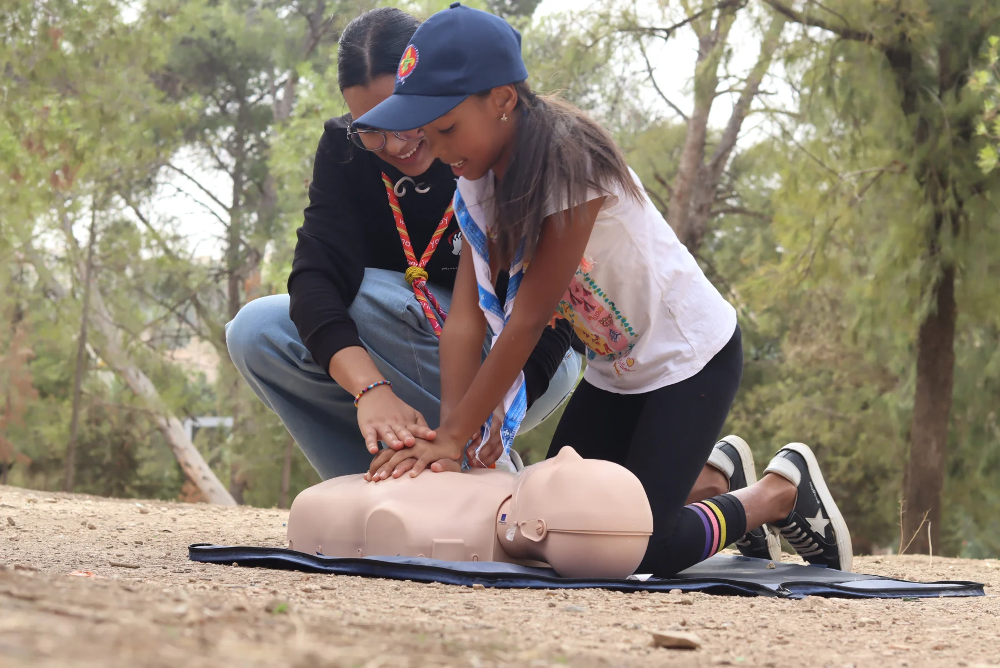

Secourisme
Initier aux gestes qui sauvent pour des citoyens plus confiants et mieux préparés.
Organiser une formationNos domaines d’action
Des formations destinées aux professionnels de santé, aux étudiants et aux citoyens. Nos ateliers favorisent la pratique, la simulation et le partage d’expérience.
Initier aux gestes qui sauvent pour des citoyens plus confiants et mieux préparés.
Organiser une formationApprendre par la pratique grâce à des ateliers et des mises en situation réalistes.
Découvrir nos actionsAller à la rencontre des jeunes et des communautés pour sensibiliser et partager.
Participer avec MLS
Organiser une formation
École, association, établissement de santé ou entreprise : échangeons sur votre public et vos besoins pour préparer une formation avec l’équipe MLS.
Contact